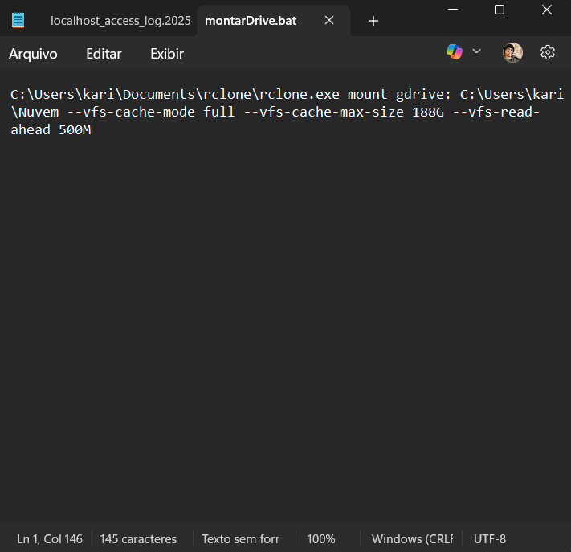

Este guia ensina como montar seu Google Drive como uma pasta local no Windows (C:), com cache para performance e iniciando automaticamente com o sistema.
A Microsoft integra o OneDrive diretamente no Windows Shell (o núcleo da interface gráfica), permitindo que ele funcione nativamente sem configurações extras.
A Google disponibiliza o Google Drive for Desktop, que também permite acesso local. Porém, ele consome muita memória RAM, não permite que você controle como os dados são baixados e caso queira usar a memória de forma avançada, o sistema operacional não alcança essa nuvem devido a integração com o Kernel do Windows.
Você precisará de duas ferramentas open source:
Extraia o Rclone para uma pasta segura (ex: C:\rclone\). E em seguida, instale o WinFsp.
Abra o terminal (CMD) na pasta do Rclone e digite:
rclone config
n para "New Remote"Para que o drive monte automaticamente, vamos criar um arquivo .bat.
Abra o Bloco de Notas, cole o código abaixo e salve como montarDrive.bat:
@echo off
:: Coloque aqui o caminho onde está seu rclone.exe
:: Exemplo: C:\rclone ou C:\Users\%USERNAME%\Documents\rclone
cd /d "C:\caminho\pasta\do\Rclone"
:: Cria a pasta "Nuvem" no seu usuário se ela não existir
if not exist "%USERPROFILE%\Nuvem" mkdir "%USERPROFILE%\Nuvem"
:: --- COMANDO DE MONTAGEM ---
:: gdrive: nome que você deu no 'rclone config'
:: %USERPROFILE%\Nuvem, onde vai aparecer a pasta (ex: C:\Users\Voce\Nuvem)
start rclone.exe mount gdrive: "%USERPROFILE%\Nuvem" ^
--vfs-cache-mode full ^
--vfs-cache-max-size 188G ^
--vfs-read-ahead 500M ^
Exemplo do meu .bat:
--vfs-cache-mode full: Garante segurança aos dados e permite edição de arquivos--vfs-cache-max-size 188G: O espaço máximo que o cache pode ocupar no seu disco físico--vfs-read-ahead 500M: Carrega 500MB adiantado na memóriaPara não precisar clicar no .bat toda vez que ligar o PC:
Win + R no teclado.shell:startup e dê Enter.montarDrive.bat para dentro dessa pasta que abriu.Na próxima reinicialização, seu Google Drive estará local, acessível como uma pasta no seu computador.